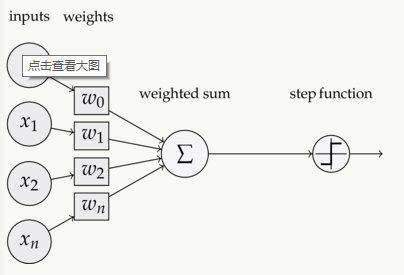
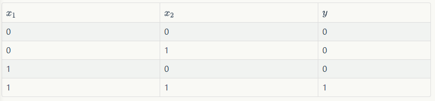

参考: 吴恩达深度学习视频和网上教程
https://www.zybuluo.com/hanbingtao/note/433855
隐藏层大于2的神经网路叫做深度神经网络
一个仅有隐藏层的神经网络可以拟合热河一个函数，但是它需要很多很多的神经元。 而深度网络就是考虑用少得多的神经元就能拟合同样的函数。
为了拟合一个函数，要么使用浅而宽的网络，要么使用深而窄的网络。 > 后者给节约资源
1. 感知器

1.1 组成
- 输入权值 \(w_i\)
- 激活函数, 比如阶跃函数，\(f(x) = z>0?1:0\)
- 输出，整个感知器的公式 \[f(w \cdot x + b)\]
如此，表示的就是一元函数。因为权值的不同取值，由此可以表达出不同的函数
1.2 表示能力
and函数: \(w_1 = 0.5, w_2=0.5, b=-0.8\)  \[y = 0.5x_1 + 0.5x_2 -0.8\]
or函数： \[y=0.5x_1+0.5x_2-0.3\]
线性分类 > 因为它的数学表示实际上就是一条直线 不能表示一维以上的，比如异或运算 ## 1.3 训练
训练的主要想法就是进行更新权值
更新 \(w_i, w_0=b\)
深度学习： 反向传播是否可以保证收敛？？ 强化学习：探索和利用
budget: 总共评估多少个节点 随机深林
算法
Q-learning > 蒙特卡罗 + 动态规划
1. 深度学习应用总结
分类 - Standard NN - CNN - RNN - Customl / Hybrid
- structured vs unstructured
- 结构化数据： 组织为表格形式，每个维度都在人类的意义下具有解释性
- 非结构化数据：例如图像或者音频，每个细小的单位是像素点。 > 从历史的角度来看，计算机很难解释非结构化数据。但是深度学习引入后，对非结构化数据也能解释的很好
- why 深度学习现在火起来？
- 大量数据的产生
- 越来越深的神经网络的规模的上限会表现得越来越好 > 在小规模数据上，算法的优劣性不好比较。但是在大规模数据上，深度学习是远远领先的
- 发展
- Data
- Computation
- Algorithms:
- 特别地，从sigmoid函数到ReLu函数的改变，因为sigmoid函数在最低端和最上端点的梯度变化非常缓慢，不利于学习。可以是梯度下降得更快
神经网络类比于人的大脑有点过度了，没有必要，因为从某种深度学习只是人的大脑一个非常简化的近似
1.1 神经网络与深度学习
- 二分类
- Logistic Regression > 目标改变了，是从概率上来约束，即希望\(P(y=1|x)\)最大，此时认为该算法是最优的
1.5 序列模型 Sequence
https://mooc.study.163.com/learn/2001280005?tid=2001391038&trace_c_p_k2=a561339e0cbf45b491dd9e12104a8641#/learn/content?type=detail&id=2001771052
序列模型是什么？ 其实，从某种意义上说，定义很简单。就是输入和输出的是序列。 从某种意义上感觉，就是原本的数据是输入有很多维特征，而现在是这些维特征从另一个角度进行解释。即比如自然语言处理，输入为一个句子。 每个单词作为输入的特征，但是这些特征并不是相互独立的。 机器学习中好像有要求特征必须相互独立把
在这里好像又从新起了一个名字？
在这里看来，每维特征姑且叫做特征吧。 这些是相关联的，有点像层次分析法，所以必须要使用神经网络来做。 这些是序列的 序列意味着什么？意味着之间的关系性，前后具有联系，不能割开看。 如何做标记？ 这里认为\(x^{(i)}\)表示第i个样本，\(x^{(i)<t>}\)表示第i个样本的第t个特征，y同理。\(T_x^{(i)}\)表示\(x^{i}\)的长度？？？ - 于是意味着x的输入还可以处理为不一样？？
> 所以后面有说到，可以填充或者零填充使得每个输入语句达到同样的长度如何来表示这些词？ 这里的一个想法是用字典(这里通常是最常见的词，不在其中的词使用UNK来表示)，使用One-hot编码来做
1.1.1 RNN在NLP中的应用
- 任务： 输入一个句子，对句子做情感分析，比如评分。 比如：输入的x是一个句子，那么怎么感觉学习过程的有效性呢？ 首先必须思考神经网络结构是基于什么做的？比如在图中，是基于图的整个结构做的。 而在NLP中这里针对的就是一个句子。
那么，在自然中，多个句子之间是会存在相同的单词。 所以，当对上一个单词训练结束后，再使用下一个单词进行训练就可。此时模型
特别注意，深度学习是分领域的，等于说如果这里没有给定在哪个领域内是很难的。像在这里，邻域实际上决定了学习目标是什么。 而这里的学习目标，以及输入，输出是什么，神经网络模型需要学习的是什么就显得非常重要了。所以这里需要特别思考
- RNN > 这里理解的角度和自己的想象方式，从某种角度上还是出现了偏差 > 这里的时间步，说的是上一个x训练的模型的参数，然后再影响到下一个x输入的模型的参数。 ？ 合理循环之说呢？ 不对！错误，这里看错了标记\(x^{<t>}\)只的是第t步的特征，所以这里网络结构的输入依然是一个x。不可网络结构变得非常不一样，不再是每一维特征都有复杂的到最终的关系。
\[a^{<1>} = g(W_{aa} a^{<00>} + W_{ax} x_{<1>} + b_a\]
\[y^{<1>} = g(W_{ya} a^{<1>} + b_y\] > 其中\(a^{<0>}\)是初始化的，\(a^{<1>}\)是循环神经网络\(x^{<1>}\)到\(x^{<2>}\)传递的参数
假设输入向量的维度为x，循环体的全连接层神经网络的输入大小为h+x.
做深度学习时，最重要的想法就是能够转换为矩阵运算，然后记得通过检查维度来确定正确性
RNN只用到了之前的信息。即只使用了序列前面的信息，未使用序列后面的信息
1.2
梯度下降优化
如果对于凸函数，是具有全局最优解的 为什么凸函数具有全局最优解？ \(f(y)-f(x) \leq f'(x) (y-x)\) 注意最凸优化中，把权重矩阵看成是x的参数，目标是看何时x能够降到最低点；直观上看就是，梯度下降的方向就是去往最低点的地方。因为全局只有一个最低点。
- 凸函数的快速判断
- 判断的性质 > 一阶条件，即满足一阶不等式的公式，即证明不等式 > 二阶条件，直接对二阶求导公式需要大于等于0. 对于矩阵来说，探究的就是矩阵的二阶导矩阵，此时称为Hessian矩阵。
- 常见的1维凸函数
- 放射函数 \(ax+b, a,b \in R\)
- 指数函数
- 对数函数 \(logx\)
- 幂函数 \(x^a\)，绝对值幂函数
- 负熵 xlogx
- 常见的d维凸函数有：
- 仿射函数
- 范数
- 凸函数运算
- 非负加权求和: 所以这一点在神经网络中不能保证，所以就不是最优解
- 与放射函数复合
- 最大值或者上确界
2. 各种优化器
二阶Hessian矩阵：各个的偏导数
一阶倒数刻画切线的斜率，二阶倒数刻画的是切线的斜率的变化率。
二阶函数能刻画函数的凹凸性